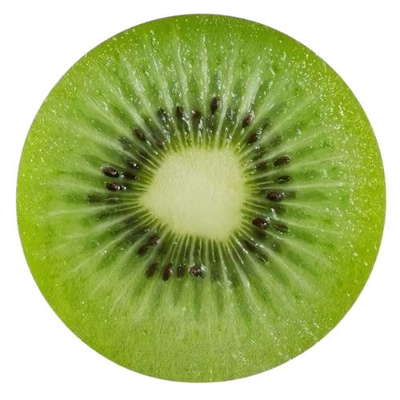

Areeya Promkhambut
นางสาวอารียา พรหมคำบุตร


✧ About Me ✧
อารียา พรหมคำบุตร ปัจจุบันเป็นนักศึกษาชั้นปีที่ 1 มหาวิทยาลัยกาฬสินธุ์ สาขาวิศวกรรมคอมพิวเตอร์ ประธานรุ่นปีที่ 11 มีความสนใจในด้านระบบสมองกลฝังตัวและเครือข่ายคอมพิวเตอร์
✧ My Interests ✧
Investment Banking Aerospace Swimming Green-Energy Sustainable Engineering Cooking Cozy Gaming Creative Expression
✧ Photo Dump ✧


 Experience & Activities
Experience & Activities
TrueLens | Social Innovation Project: ได้งบสนับสนุนจากทาง สสส. เพื่อการนำแนวคิด AI ที่เน้นมนุษย์เป็นศูนย์กลางไปพัฒนาต้นแบบ LINE chatbot เพื่อต่อต้านข้อมูลเท็จ deepfake ผ่านการออกแบบเพื่อพฤติกรรมเก้าเป้าหมายภายใต้โครงการ Rookie Innovator Program SS3 ที่ SYSI
Youth Voice for Eco-Law Forum: ผู้ริเริ่มจัดงานในชื่อ NGO อิสระ Saphap.Thailand ภายใต้ทุน Ashoka NextGen Chanemakers จัดเวทีคัดเลือกและรวบรวมเยาวชนอายุ 15 - 25 ปีจำนวน 30 คนมาที่รัฐสภาเพื่อร่วมร่างและออกแบบกฎหมายสิ่งแวดล้อมเชิงปฏิบัติ
Ashoka NextGen Changemakers: เป็นหนึ่งในเยาวชนผู้ถูกคัดเลือกให้เป็นตัวแทนผู้สร้างการเปลี่ยนแปลงในหัวข้อสิ่งแวดล้อมในประเทศไทย เจาะลึกในด้านการอนุรักษ์พื้นที่ชุ่มน้ำและสภาพแวดล้อมในไทยที่ถูกมองข้าม
 Honors & Awards
Honors & Awards
Thammasat Youth Deliberation Hackathon: วิเคราะห์ช่องว่างในการเข้าถึงบำนาญและค่าครองชีพเพื่อเสนอมาตรการแทรกแซงเชิงนโยบายที่ขยายผลได้สำหรับผู้สูงอายุ
Environmental PolicyFest Hackathon (GYBN): ออกแบบคอนเซปต์บนเว็บที่ส่งเสริมการประหยัดไฟฟ้าผ่านวิเคราะห์พฤติกรรมของกลุ่มเป้าหมาย
 Education
Education
- Kalasin University | Kalasin: Bachelor of Computer Engineering (2026 - Present)
- SWU Demonstration School Prasarnmit | Bangkok: (2022 - 2023)
- St.Mary | Udon Thani: IEP Program (2019 - 2022)